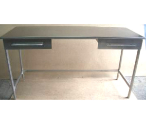

Стеллаж металлический складской из легированного металла предназначен для хранения архивных проб, химреактивов, химической посуды на складах, в производственных помещениях и лабораториях.
Стол для микровесов СТ-1,6.0,7.0,7.Гр.В.Н.
Стол весовой металлический из легированного металла с гранитной столешницей предназначен для взвешивания корольков и корточек на микроаналитических весах в аналитических лабораториях.

Стол СТ-1,6.0,7.0,75.Н.
Стол подсобный металлический из легированного металла предназначен для проведения технологических подготовительных операций при приемке проб, сушки проб, плавки проб и других операций в аналитических лабораториях.
Шкаф для химических реактивов ШВХ-0,8.0,6.2,1.
Шкаф металлический из легированного металла предназначен для хранения химреактивов в складах.